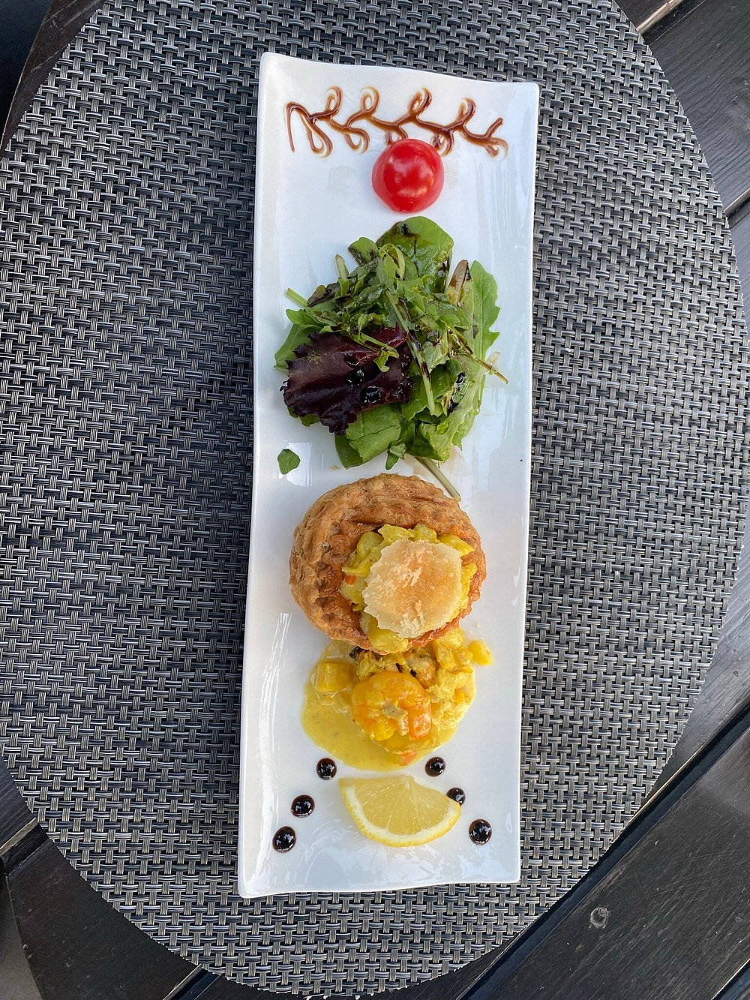
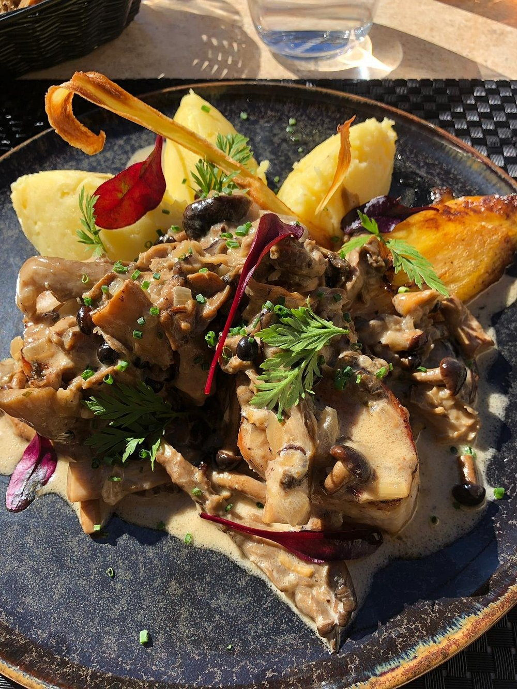
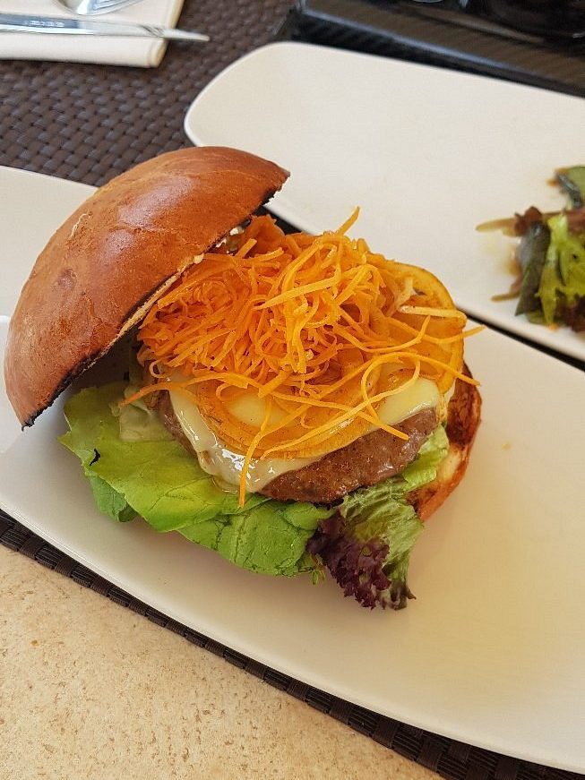

Les plats
Ce qui sort de la cuisine
Les assiettes du 9, photographiées en salle et en terrasse. Cliquez sur une photo pour l’agrandir.
 Photo à ajouterSaint-Jacques et écume
Photo à ajouterSaint-Jacques et écumeplat-01.jpg
 Photo à ajouterFoie gras et pain grillé
Photo à ajouterFoie gras et pain grilléplat-02.jpg

Photo à ajouterUne assiette de saisonplat-03.jpg
 Photo à ajouterCôte de bœuf et gratin
Photo à ajouterCôte de bœuf et gratinplat-04.jpg

Photo à ajouterViande aux champignonsplat-05.jpg

Photo à ajouterLe burger du chefplat-06.jpg
 Photo à ajouterUn plat à ajouter
Photo à ajouterUn plat à ajouterplat-07.jpg
 Photo à ajouterUn plat à ajouter
Photo à ajouterUn plat à ajouterplat-08.jpg
 Photo à ajouterUn plat à ajouter
Photo à ajouterUn plat à ajouterplat-09.jpg
 Photo à ajouterUn plat à ajouter
Photo à ajouterUn plat à ajouterplat-10.jpg
Passer à table
Les prix et le détail des plats sont sur la carte
Le menu « 3 notes » change au gré du marché : entrée, plat et dessert composés par la cuisine.